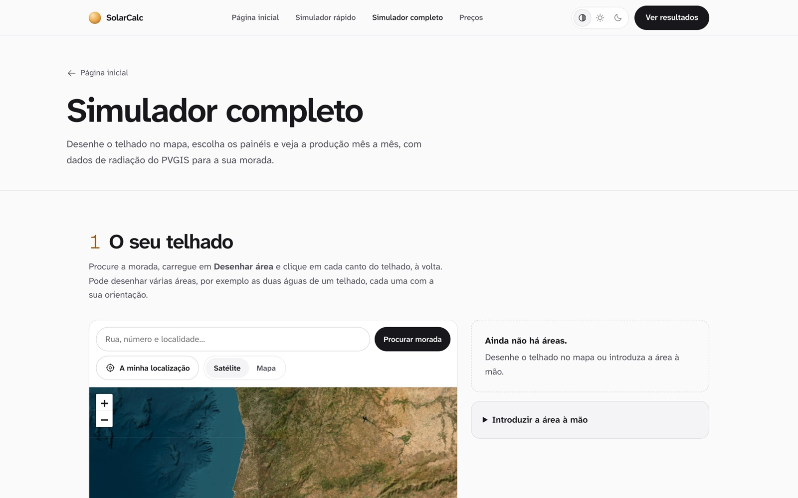

case study · web · 2026
From the sun to the bill.
SolarCalc tells a Portuguese household what solar panels would save them, and shows where every number comes from.

Solar quotes ask for trust. This one shows its working.
Most calculators return one big number. SolarCalc walks through the same calculation an installer would do, with a 3D house that changes as each step is explained.
The quick simulator starts from a typical Lisbon home. The full simulator lets you draw your own roof on the map and pick the panels.
How the calculation works
06:30 · sunrise
It starts with the real sun.
Irradiance for the exact address comes from PVGIS, the European Commission’s solar database.
10:00 · morning
Then the roof.
You draw the roof on a satellite map, one area per slope, each with its own orientation and tilt.
13:00 · peak
Then the bill.
Real Portuguese tariffs turn kilowatt-hours into euros, month by month.
19:00 · sunset
Then the answer.
How long until the panels pay for themselves, explained in six steps you can follow.

Decisions
A house that explains
The 3D scene is not decoration: each of the six steps moves the camera to the part of the house it is talking about.
Start from a typical home
The quick simulator begins with a house using 350 kWh a month and a 40 m² roof facing south at 30°, so the first answer arrives before any typing.
Draw the real roof
The full simulator searches the address and lets you trace each slope on a satellite map.
Light and dark
The site follows the system appearance, or a choice you make in the header.
next project
 TeeUp
TeeUp